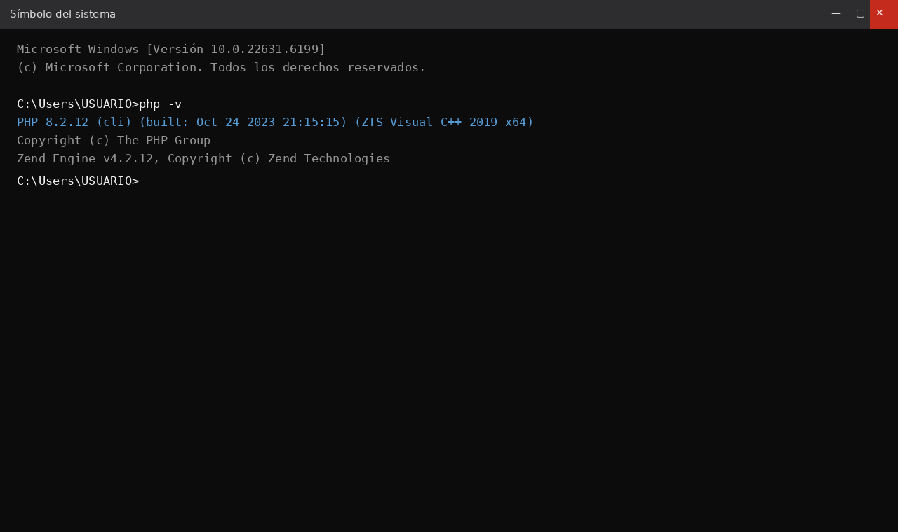
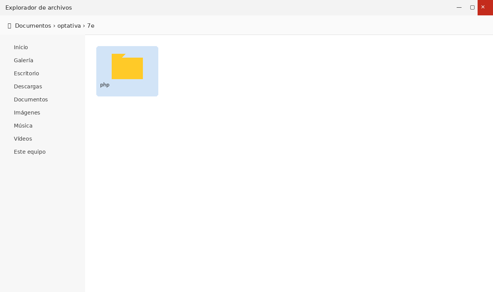
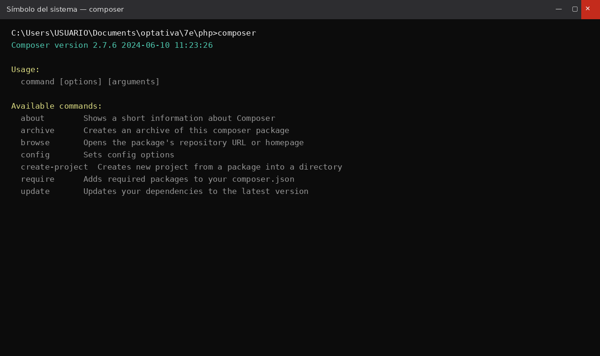
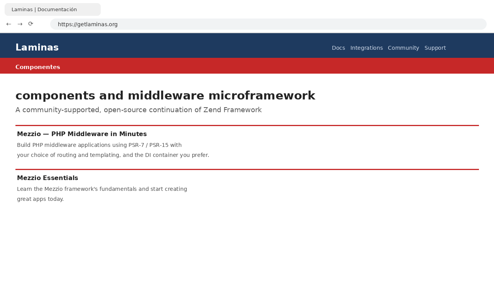
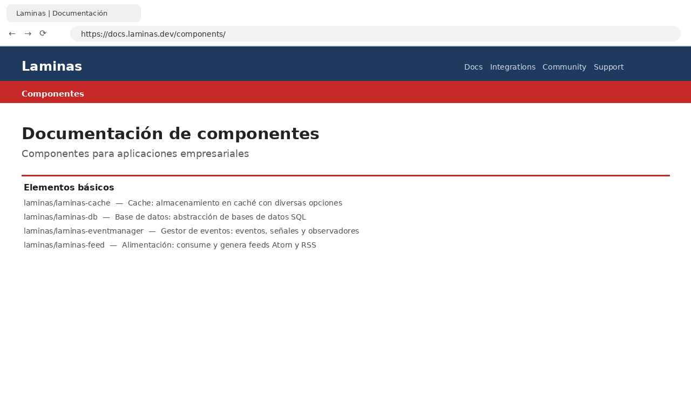
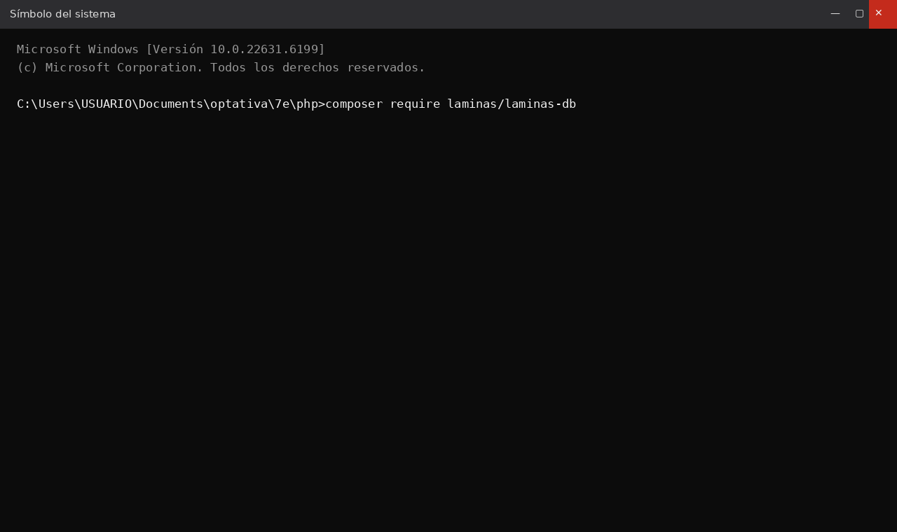
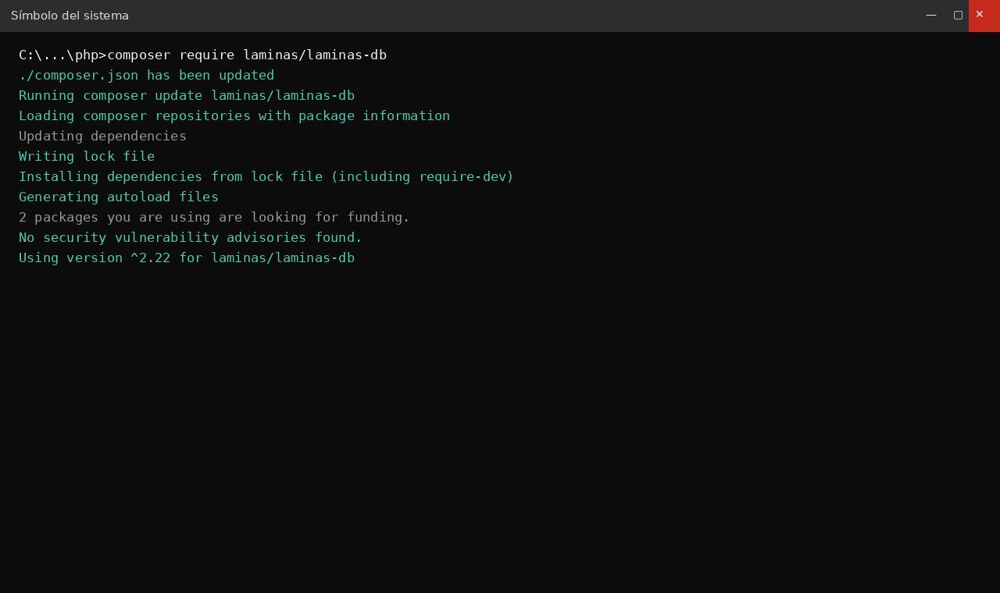
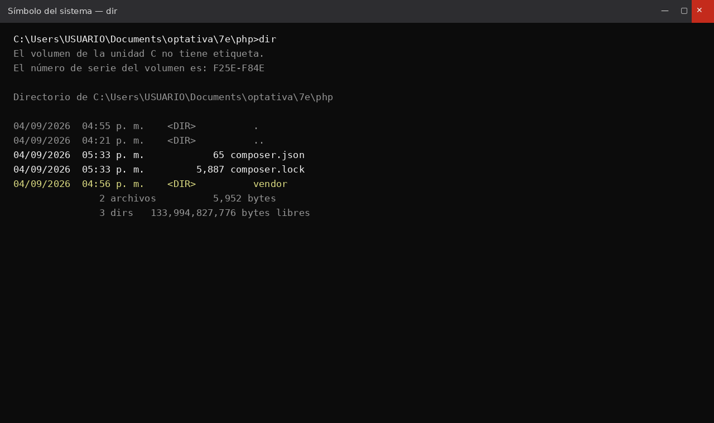
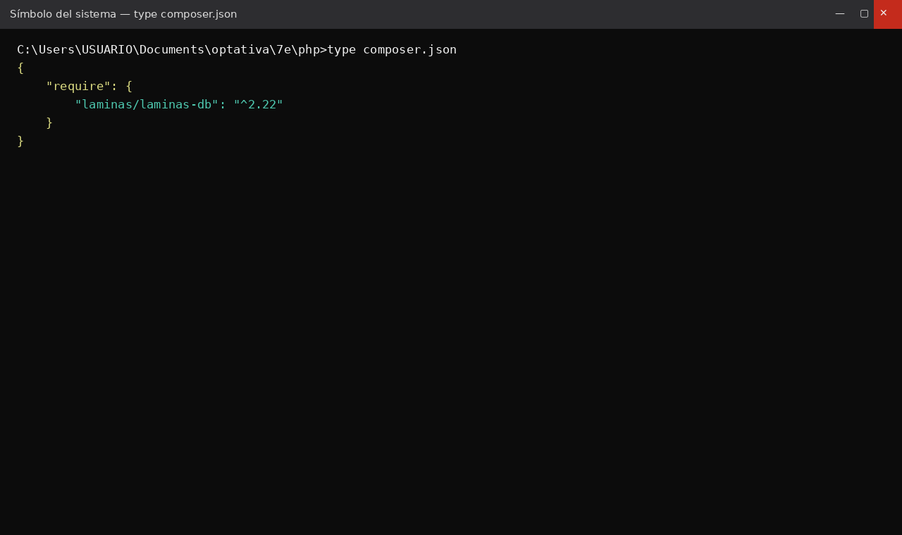

Documentación de la práctica
Alumno: Duilio César Capilla Cuautle
Materia: BDN - Base de Datos en la Nube
Profesor: Javier Nolasco Hernández
Carrera: Desarrollo de Software Multiplataforma
Universidad: Universidad Tecnológica de Puebla (UTP)
Fecha: Septiembre 2026
En esta práctica se documenta el proceso de instalación del componente laminas/laminas-db mediante Composer, verificando el entorno PHP y comprobando que las dependencias quedaron correctamente registradas en el proyecto.
Paso 1. Verificar la instalación de PHP.
php -v

Paso 2. Crear la carpeta del proyecto.

Paso 3. Comprobar Composer.
composer

Paso 4. Consultar la documentación oficial de Laminas.


Paso 5. Instalar el paquete.
composer require laminas/laminas-db


Paso 6. Verificar los archivos generados.
dir

Paso 7. Confirmar el archivo composer.json.
{"require":{"laminas/laminas-db":"^2.22"}}
La instalación fue exitosa y Composer generó correctamente los archivos composer.json, composer.lock y la carpeta vendor, dejando el proyecto listo para trabajar con conexiones a bases de datos.
Esta práctica permitió comprender el uso de Composer para administrar dependencias en PHP y la importancia de verificar cada paso del proceso mediante la documentación oficial y la comprobación del entorno.